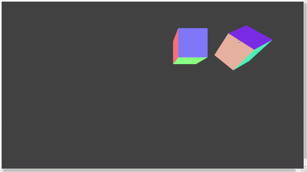

지금부터 알아볼 내용은 Three.js에서 어떻게 카메라를 rotate시키는지, 그리고 object를 어떤 방식으로 rotate시킬 수 있는지에 대해 자세히 알아보겠습니다. 진행하기에 앞서, 먼저 이 튜토리얼의 최종 결과물부터 소개해드리겠습니다.
처음 실행하시면 우선 아무것도 안 보이실 껍니다. cube1버튼을 누르시면 Cube 하나가 나타납니다. 위치가 고정되어 있으며 카메라의 위치가 계속 바뀌고 있기 때문에 움직이는 것처럼 보입니다. cube2버튼을 누르시면 다른 Cube가 나타납니다. 기존의 Cube와 달리 혼자서도 rotate하는 모습을 확인할 수 있습니다. cube3버튼을 누르시면 또 다른 Cube가 나타납니다. 이 Cube는 앞서 Cube들과 달리 사용자의 마우스를 클릭하고 움직이면 마우스 방향에 맞춰서 rotate를 합니다. 모든 버튼들은 해당 cube의 모습을 지우거나 나타나게 할 수 있습니다.
const scene = new THREE.Scene();을 통해 대상과 위치를 설정할 수 있게 해줍니다.
그리고 const camera = new THREE.PerspectiveCamera(1000, h_scr/v_scr, 0.01, 100 );코드를 통해 카메라를 설정합니다. 이때 카메라의 매개변수는 시야각, 좌우 비율,near, far로 구성되어 있습니다.
near과far은 랜더링하는 범위를 지정하는 부분으로 자원의 낭비를 막을 수 있습니다.
Cube가 잘 보일 수 있게 camera.position를 통해 위치를 조정합니다.
다음은 const renderer = new THREE.WebGLRenderer({canvas: HelloCanvas, antialias: true, preserveDrawingBuffer: true})를 통해 랜더러를 정의합니다.
랜더러를 출력하는 canvas, 울퉁불퉁함을 흐리게 해주는 antialias값을 true로 설정합니다.
Three.js에서 애니메이션은 stop motion이기 때문에 조금씩 움직여서 계속해서 랜더링을 수행합니다.
그러기 위해 const animate = function()함수를 만들고, requestAnimationFrame( animate )을 통해 animate을 loop시켜 object들이 마치 움직이는 것 처럼 보이게 만듭니다.
기존 코드에 다음과 같은 코드를 삽입합니다.
Cube를 만들기 위해 const geometry = new THREE.BoxGeometry()를 통해 Three.js에서 BoxGeometry를 사용합니다.
BoxGeometry를 통해 object의 모양를 만들었으며 let material = new THREE.MeshNormalMaterial를 통해 geometry의 색상을 부여합니다.
본 튜토리얼에서 사용된 MeshNormalMaterial란, 백터를 RGB색상으로 매핑하는 재질로, 카메라에 대한 법선 상대 방향만 표시합니다.
그렇게 만든 Cube를 이제 scene.add()를 통해 scene에 추가합니다.
그러면 다음과 같이 Cube 하나가 보이실 겁니다.
Cube를 만들었으니깐 이제 Camera rotation을 해보겠습니다. 우선 해당 코드를 기존 코드에 추가합니다.
앞서 언급했다시피, Three.js의 애니메이션은 stop motion입니다. 때문에 Camera를 계속 움직이게 보이려면 조금 움직이고 랜더링하는 작업을 빠르게 반복해야됩니다.
그러기 위해 기존 Three.js에서 제공하는 Clock이라는 내장 솔루션과 getElapsedTime()와 같은 내장 메서드를 사용하겠습니다.
이때, getElapsedTime()는 Clock이 생성된지 얼마나 지났는지 반환합니다. 때문에 반환값을Math.sin(), Math.cos()에 넣고 camera.positon값으로 갱신해, Camera가 한 방향으로만 가는게 아니라 rotate하게 만듭니다.
결과물은 다음과 같습니다.

카메라로 Cube를 돌려봤으니깐 이제는 혼자서도 따로 돌아가는 Cube를 추가해 보겠습니다.
먼저 처음 Cube와 같은 방법으로 Cube를 만들고 Cube의 위치를 조정하고 Scene에 추가합니다.
추가된 Cube를 돌리기 위해 기존의 animate function에 cube2.rotation.x += 0.02; cube2.rotation.y += 0.02코드를 추가합니다.
.rotation은 Object를 라디언 단위로 회전할 수 있게 해줍니다.
코드를 추가하고 실행하면 결과물은 다음과 같습니다.

기존의 Camera Rotation이나 Cube Rotation은 직접 움직임을 제어할 수가 없었고, 단순히 보는 것만으로는 Camera가 움직이는 건지, Object가 돌아가는 건지 파악하기 힘듭니다.
하지만 마우스로 Cube를 Rotation 시킬 수 있으면 Camera가 움직이는 건지, Cube가 돌아가는 지 파악하기 쉽습니다.
이제 어떻게 마우스 움직임을 통해 Cube를 Rotate하는지 설명하겠습니다.
방식은 다음과 같습니다
mouse clickEvent가 발생하면 mouseX = event.clientX, mouseY = event.clientY를 통해 web broswer상의 마우스의 좌표를 변수 mouseX,mouseY에 저장합니다
다음으로 mouse moveEvent가 발생하면 바뀐 mouse좌표랑 clickEvent가 발생했을 때의 mouse좌표의 차이를 변수rotateX,rotateY에 저장합니다.
이때, mouseX, mouseY의 값을 mouse moveEvent마다 갱신하면 너무 Cube가 너무 빨리 돌아가는 것을 방지할 수 있습니다.
변수rotateX,rotateY는 Cube rotation의 단위가 되며, mouse를 움직일 때마다 값이 갱신되고, clickEvent가 끝나면 실행되지 않습니다.
마무리는 간단한 작업으로, Cube들의 opacity값을 조정해 큐브를 안 보이게 하거나, 보이게 하고 Camera 위치 조정하는 부분에 대해 설명하겠습니다.
기본적으로 opacity값이 0이면 투명도가 100%로 안 보이고, opacity값이 1이면 가장 잘 보입니다.
우선 html에 버튼을 추가하고, addEventListener을 통해 Cube의 opacity값이 0이면 1로 변환하고, 1이면 0으로 변환하게 해줍니다.
현재까지, 카메라가 계속 돌아가니깐 조금 어지러울 수 있습니다.
어지러움을 유발할 수 있기 때문에camera.lookAt(cube.position);을 통해 카메라가 계속 움직이되, 한 방향만 보게 만들 수 있습니다.
최종 결과물은 다음과 같습니다